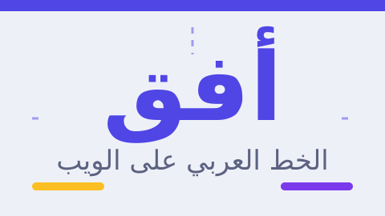

كثير من الواجهات العربية تبدو مترهّلة، ليس لأن الخط سيئ، بل لأن الإعدادات منسوخة من تصميم لاتيني. الحروف العربية متصلة وأفقية الطابع، ولها ارتفاع بصري مختلف، فتحتاج قيماً مختلفة قليلاً.
١. حجم النص: ١٧–١٩ بكسل للنص الأساسي
النص العربي يُقرأ أصغر من نظيره اللاتيني بالحجم نفسه. القيم العملية:
| العنصر | الحجم المقترح | الوزن |
|---|---|---|
| النص الأساسي | ١٧–١٩px | 400 |
| العنوان الرئيسي | ٣٢–٤٤px | 700–800 |
| عنوان فرعي | ٢٢–٢٦px | 700 |
| ملاحظات وتذييل | ١٤–١٥px | 400 |
٢. ارتفاع السطر: ١.٧ إلى ١.٩
أهم إعداد في الصفحة العربية. الحروف المرتفعة والمنخفضة تحتاج مساحة رأسية حتى لا تتلامس الأسطر:
body {
font-size: 18px;
line-height: 1.85;
}المقال الطويل يتحمّل الارتفاع الكبير بل يستفيد منه، أما العناوين فتقلّ فيه القيمة إلى ١.٣–١.٤ كي تبقى متماسكة.
٣. المسافات بين الحروف: صفر لا موجب
زيادة letter-spacing تفسد الصلة بين الحروف العربية وتجعل الكلمة مفكّكة. الأصل أن تبقى 0، ويُسمح بقيمة سالبة صغيرة جداً -0.01em في العناوين لو بدت متراخية.
لا تنقل أبداً خصائص التصميم اللاتيني كما هي إلى النص العربي، خصوصاً فوق الأحرف، المسافات بين الحروف، وتحويل النص إلى أحرف كبيرة — لا معنى للأخيرة في العربية.
٤. كيف تختار الخط: ثلاثة معايير
- نسب العائلة: اختر خطاً بوزنين على الأقل (٤٠٠ و٧٠٠)، وتحقّق من وجودهما حقاً لا من الاسم فقط.
- الوضوح على الشاشة: جرّب الخط في حجم ١٦px فعلياً؛ بعض الخطوط الجميلة في العناوين غير مقروءة في الفقرات.
- الأرقام: تحقّق من شكل الأرقام (عربية ٠١٢٣ أم هندية ١٢٣٤) ومن وجود الأقواس والرموز متوافقة.
خط واحد للنصوص وآخر للعناوين كافٍ. ويكفي وزنان لكل خط. أما تحميل ستة أوزان فذلك ثمن بطيء لا يلاحظه أحد إلا زمن انتظار الصفحة.
٥. الاتجاه: من الخصائص المنطقية بدل اليسار واليمين
الخطر الأكبر في واجهة عربية أن تجد نفسك تستخدم margin-left ثم تفشل عند تحويل الاتجاه. الحل هو الخصائص المنطقية:
| بدلاً من | استخدم | ماذا تعني في RTL |
|---|---|---|
margin-left | margin-inline-start | الهامش على اليمين |
padding-right | padding-inline-end | الحشو على اليسار |
text-align: left | text-align: start | محاذاة إلى اليمين |
border-left | border-inline-start | إطار على اليمين |
ووثّق الاتجاه في الوسم نفسه: <html lang="ar" dir="rtl">. لا تعتمد على CSS وحده لهذا.
٦. النص المختلط: عربي + إنجليزي + أرقام
أكثر ما يشوّه الصفحات العربية من هذا الاختلاط. قاعدتان تكفيان:
- للكلمة الإنجليزية: غلّفها بـ
<span dir="ltr">أو استخدم عنصراً داخلياًlang="en"إن كنت بحاجة إلى نطق صحيح للقارئ الآلي. - للمقاطع الطويلة (كود، روابط): اضبط الاتجاه إلى
ltrواجعل المحاذاة إلى اليسار داخل الصندوق، مع بقاء العنصر في مكانه الصحيح من التخطيط.
العلامات الرقمية المرتبطة بنص عربي مثل «٥ دقائق» لا تحتاج أي تعديل، فالمتصفح يحلّها تلقائياً.
٧. تفاصيل تصنع الفرق
- عرض سطر مريح: بين ٦٠ و ٧٥ حرفاً؛ استخدم
max-width: 65chلمحتوى المقال. - التباعد بين العناصر: ارتفاع أوسع للسطور يعني حاجة أقل للهوامش بين الفقرات؛ ١em إلى ١.٢em بين الفقرات جيد.
- حالات التركيز: إطار مرئي واضح
:focus-visibleلأن التنقل بلوحة المفاتيح شائع في العربية أيضاً. - الاختبار بالحقيقي: اقرأ فقرة كاملة بصوت داخلي؛ إن احتجت إعادة قراءة جملة، فالمشكلة في الإعدادات لا في النص.
الخلاصة في ثلاث نقاط
- ابدأ بحجم ١٨px وارتفاع سطر ١.٨٥، ثم عدّل قليلاً حسب الخط الذي اخترته.
- لا تستخدم خصائص اليسار واليمين؛ اعتمد على الخصائص المنطقية ليعمل التخطيط في الاتجاهين.
- وثّق
dir="rtl"في وسمhtml، وغلف المقاطع الإنجليزية والأكواد باتجاه مستقل.